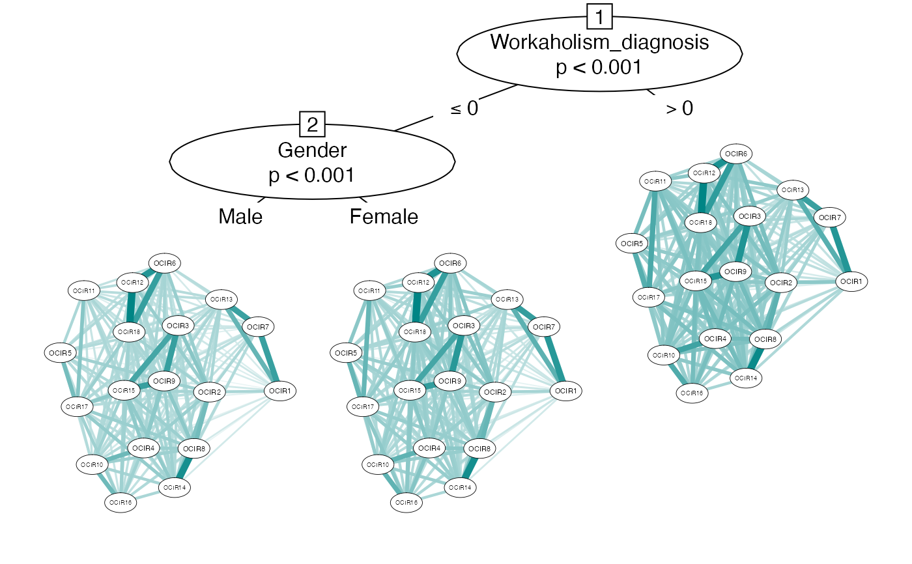

This dataset includes 16,426 workers who were assessed on symptoms of psychiatric disorders (ADHD, OCD, anxiety, depression) and workaholism.
workaholic
a dataframe. Columns represent symptoms and rows represent individuals
Scales: Adult ADHD Self-Report Scale, Obsession-Compulsive Inventory-Revised, Hospital Anxiety and Depression Scale, and the Bergen Work Addiction Scale.
Also includes demographics such as age, gender, work status, position, sector, annual income.
The dataset is publicly available at https://doi.org/10.1371/journal.pone.0152978 and can be cited as:
Andreassen, C. S., Griffiths, M. D., Sinha, R., Hetland, J., & Pallesen, S. (2016). The relationships between workaholism and symptoms of psychiatric disorders: a large-scale cross-sectional study. PloS One, 11, e0152978.
#> Gender Age Age_Groups Marital_Status #> 1 Male 47 4 Married/common law partner/partner/boy- og girlfriend #> 2 Female 49 4 Single/divorsed/separated/widow/widower #> 3 Female 49 4 Married/common law partner/partner/boy- og girlfriend #> 4 Female 39 3 Married/common law partner/partner/boy- og girlfriend #> 5 Female 42 3 Married/common law partner/partner/boy- og girlfriend #> 6 Female 44 3 Married/common law partner/partner/boy- og girlfriend #> Work_Full_Position Part_Time_Position Percentage_Full_Time_Equivalent Retired #> 1 Yes No No #> 2 No Yes 60 No #> 3 No Yes 40 No #> 4 Yes No No #> 5 Yes No No #> 6 Yes No No #> Student Disability_Pension Rehabilitation_Money Unemployed Homemaker Other #> 1 No No No No No No #> 2 No No No No No No #> 3 No No No No No No #> 4 No No No No No No #> 5 No No No No No No #> 6 No No No No No No #> Highest_Completed_Education Primary_school High_school Vocational_school #> 1 University / bachelor degree 0 0 0 #> 2 University / bachelor degree 0 0 0 #> 3 University / bachelor degree 0 0 0 #> 4 University / bachelor degree 0 0 0 #> 5 University / master degree 0 0 0 #> 6 University / bachelor degree 0 0 0 #> Bachelor Master_PhD Income_last_year_before_tax Work_sector Private Public #> 1 1 0 1 million NOK or more Private 1 0 #> 2 1 0 300 000 - 399 999 NOK Private 1 0 #> 3 1 0 300 000 - 399 999 NOK Private 1 0 #> 4 1 0 500 000 - 599 999 NOK Public 0 1 #> 5 0 1 700 000 - 799 999 NOK Private 1 0 #> 6 1 0 600 000 - 699 999 NOK Private 1 0 #> Franchise Line_of_business Leader_role Top_leader #> 1 0 Administration/office/personnel Top leader 1 #> 2 0 Administration/office/personnel Top leader 1 #> 3 0 Administration/office/personnel Top leader 1 #> 4 0 Administration/office/personnel Top leader 1 #> 5 0 Bank/finace/ensurance Top leader 1 #> 6 0 Bank/finace/ensurance Top leader 1 #> MidLevel_leader Other_leader No_leader HADS1 HADS2 HADS3 HADS4 HADS5 HADS6 #> 1 0 0 0 0 2 0 1 0 0 #> 2 0 0 0 0 1 0 0 0 0 #> 3 0 0 0 0 0 0 0 0 0 #> 4 0 0 0 0 0 0 0 0 0 #> 5 0 0 0 0 1 0 0 0 1 #> 6 0 0 0 0 0 0 0 0 0 #> HADS7 HADS8 HADS9 HADS10 HADS11 HADS12 HADS13 HADS14 OCIR1 OCIR2 OCIR3 OCIR4 #> 1 0 0 0 0 0 0 0 0 0 0 0 0 #> 2 0 0 0 0 0 1 0 0 0 0 0 0 #> 3 0 0 0 0 0 0 0 0 0 1 0 0 #> 4 0 0 0 0 0 0 0 0 0 0 0 0 #> 5 0 0 0 0 0 0 0 0 0 1 0 0 #> 6 0 0 0 0 0 0 0 0 0 0 0 0 #> OCIR5 OCIR6 OCIR7 OCIR8 OCIR9 OCIR10 OCIR11 OCIR12 OCIR13 OCIR14 OCIR15 #> 1 0 0 0 0 0 0 1 0 0 0 0 #> 2 0 0 0 0 0 0 0 0 0 0 0 #> 3 0 0 0 0 0 0 0 0 0 0 0 #> 4 0 0 0 0 1 0 0 0 0 0 0 #> 5 0 0 0 0 0 0 0 0 0 2 0 #> 6 0 0 0 0 0 0 0 0 0 0 0 #> OCIR16 OCIR17 OCIR18 ASRS1 ASRS2 ASRS3 ASRS4 ASRS5 ASRS6 ASRS7 ASRS8 ASRS9 #> 1 0 0 0 3 2 1 2 2 2 1 1 2 #> 2 0 0 0 2 2 1 1 1 1 1 3 3 #> 3 0 0 0 2 1 1 1 2 1 2 2 1 #> 4 0 0 0 2 2 1 3 3 1 3 2 2 #> 5 0 0 0 3 1 3 3 1 1 3 3 2 #> 6 0 0 0 2 1 2 2 1 2 2 2 2 #> ASRS10 ASRS11 ASRS12 ASRS13 ASRS14 ASRS15 ASRS16 ASRS17 ASRS18 BWAS1 BWAS2 #> 1 1 2 1 2 2 2 2 1 2 2 3 #> 2 2 2 1 1 1 1 2 1 1 1 2 #> 3 1 2 1 1 1 4 4 3 3 1 1 #> 4 2 2 1 1 1 1 2 3 3 2 1 #> 5 4 1 1 1 1 2 3 2 2 3 4 #> 6 2 2 2 1 1 2 2 2 2 2 2 #> BWAS3 BWAS4 BWAS5 BWAS6 BWAS7 SumHADSanxiety SumHADSdepression OCIR_WASHING #> 1 1 3 1 4 1 0 3 4 #> 2 1 1 2 1 1 0 2 3 #> 3 1 1 1 1 1 0 0 3 #> 4 1 1 1 1 1 0 0 3 #> 5 3 3 3 3 3 0 2 3 #> 6 1 2 1 2 1 0 0 3 #> OCIR_OBSESSION OCIR_HOARDING OCIR_ORDERING OCIR_CHECKING OCIR_NEUTRALIZING #> 1 3 3 3 3 3 #> 2 3 3 3 3 3 #> 3 3 3 3 4 3 #> 4 3 3 4 3 3 #> 5 3 3 3 6 3 #> 6 3 3 3 3 3 #> SUM_ADULT_ADHD_SELF_REPORT_SCALE SUM_BERGEN_WORK_ADDICTION_SCALE #> 1 31 15 #> 2 27 9 #> 3 33 7 #> 4 35 8 #> 5 37 22 #> 6 32 11 #> Workaholism_diagnosis OCD_DIAGNOSIS ADHD_DIAGNOSIS #> 1 0 Ikke diagnose (skåre 1-21) 0 #> 2 0 Ikke diagnose (skåre 1-21) 0 #> 3 0 Ikke diagnose (skåre 1-21) 0 #> 4 0 Ikke diagnose (skåre 1-21) 0 #> 5 0 Ikke diagnose (skåre 1-21) 0 #> 6 0 Ikke diagnose (skåre 1-21) 0 #> ANXIETY_DIAGNOSIS DEPRESSION_DIAGNOSIS #> 1 0 0 #> 2 0 0 #> 3 0 0 #> 4 0 0 #> 5 0 0 #> 6 0 0# \donttest{ ## Example networktree with OCI-R scale data(workaholic) nodeVars <- paste("OCIR",1:18,sep="") splitVars <- c("Workaholism_diagnosis","Gender") myTree<-networktree(workaholic[,nodeVars], workaholic[,splitVars]) myTree#> Network tree object #> #> Model formula: #> OCIR1 + OCIR2 + OCIR3 + OCIR4 + OCIR5 + OCIR6 + OCIR7 + OCIR8 + #> OCIR9 + OCIR10 + OCIR11 + OCIR12 + OCIR13 + OCIR14 + OCIR15 + #> OCIR16 + OCIR17 + OCIR18 ~ Workaholism_diagnosis + Gender #> #> Fitted party: #> [1] root #> | [2] Workaholism_diagnosis <= 0 #> | | [3] Gender in Male #> | | [4] Gender in Female #> | [5] Workaholism_diagnosis > 0 #> #> Number of inner nodes: 2 #> Number of terminal nodes: 3 #> Number of parameters per node: 153 #> Objective function: 311545.8# }